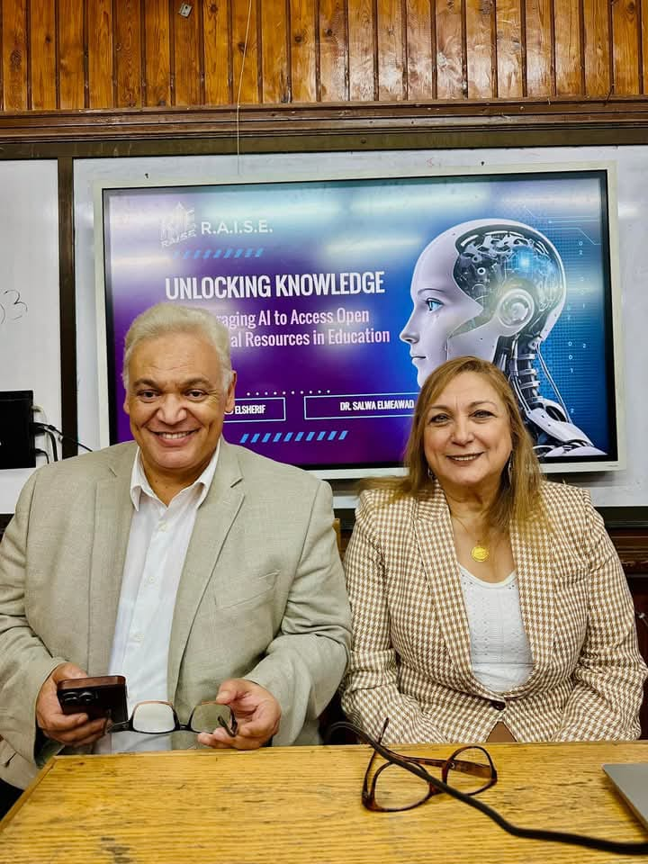
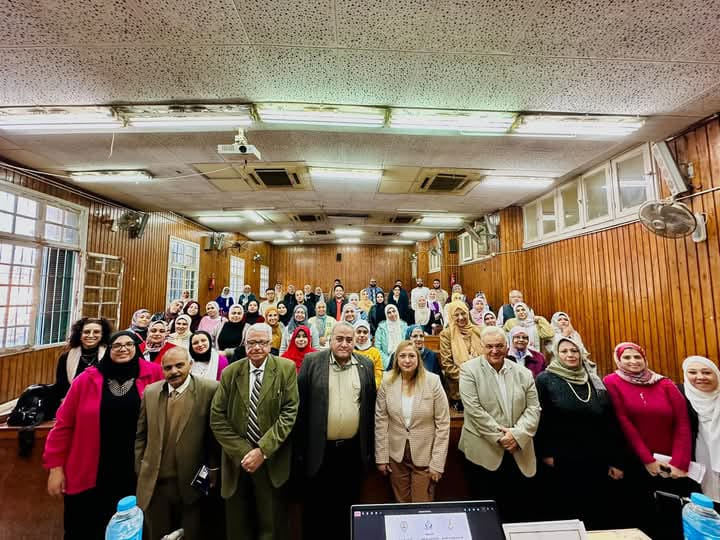

أساسيات تصميم وإدارة المحتوى الرقمي على منصات التواصل الاجتماعي
💡 في إطار اهتمام قسم المكتبات والوثائق والمعلومات بتوسيع آفاق المعرفة في مجالات البحث العلمي، نظّم القسم
محاضرة متميزة بعنوان "أدوات الذكاء الاصطناعي في خدمة البحث العلمي في مجال الإنسانيات والعلوم الاجتماعية"،
قدّمها كل من الأستاذة الدكتورة سلوى المعوض، والأستاذ الدكتور هشام الشريف، مديرَي مكتبة كوينز العامة في
نيويورك.
استعرض المحاضران خلال هذه الجلسة الأدوات الحديثة للذكاء الاصطناعي التي تساهم بشكل كبير في دعم وتعزيز البحث العلمي في مجالات الإنسانيات والعلوم الاجتماعية. وقد تم تسليط الضوء على كيفية توظيف هذه الأدوات في تحسين كفاءة البحث وزيادة دقة نتائج الدراسات.
لم تقتصر الدورة على المحاضرات النظرية فحسب، بل شملت أيضًا جانبًا عمليًا، حيث أُتيحت لنا الفرصة لتصميم محتوى رقمي متكامل، وتعلّمنا كيفية الترويج له بفعالية عبر المنصات المختلفة. 🎯
✨ شكّلت المحاضرة فرصة متميزة للمشاركين لفهم آليات تطبيق الذكاء الاصطناعي في مختلف المجالات الأكاديمية، والتعرّف على سبل الاستفادة من هذه الأدوات في تطوير الأبحاث وتحقيق نتائج رفيعة المستوى.
صور من المحاضره

